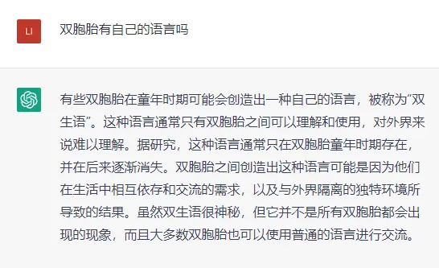
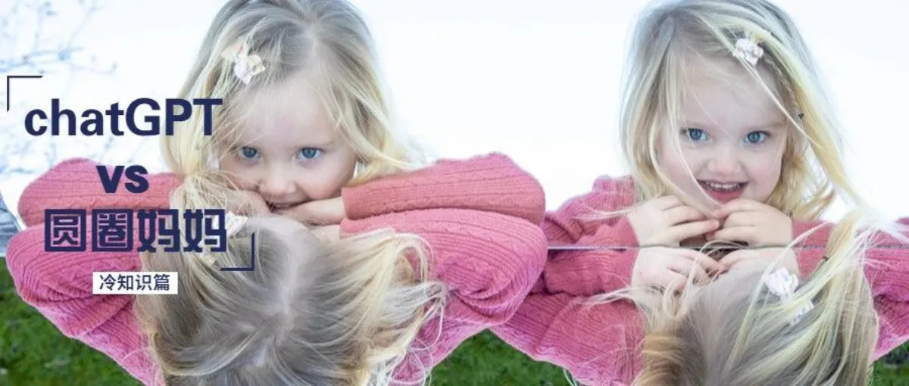
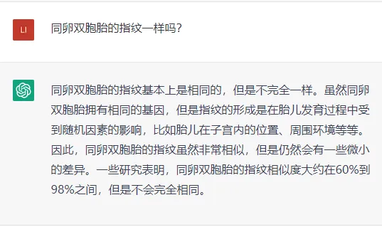
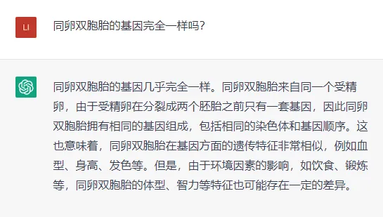
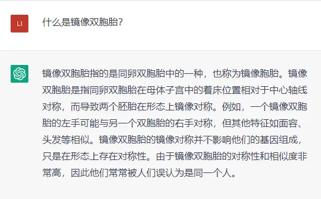
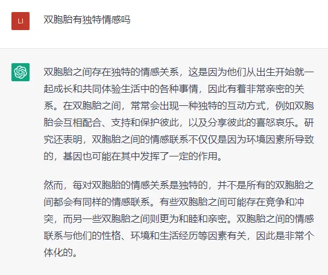

孖仔帮
公众号ID：twinsbang
关注
文|圆圈妈妈
网图|侵删
继续上一篇chatGPT的双胞胎育儿经【科普篇】，这期是冷知识篇，非常有趣。
同卵双胞胎的指纹一样吗？
圆圈妈妈来battle：
有研究表明：基因不是决定指纹的唯一因素。
在刚开始怀孕时，同卵双胞胎的指纹是相同的，但在怀孕6到13周期间，随着婴儿开始移动，他们会各自触摸羊膜囊，这个时候双胞胎的手上就会形成独特的脊纹和线，不同的指纹就是这样形成的。
我和圆圈爸曾经做过一个有趣的测试。
在手机上录入圆圆的指纹，用圈圈的指纹来解锁，结果失败。
但是呢，面容可以！
录入圆圆的面容，用圈圈的脸去刷，解锁成功！
O(∩_∩)O哈哈~真有意思！
同卵双胞胎的基因完全一样吗？
圆圈妈妈来battle：
chat的回答有点偏差。
因为根据2012年美国人类遗传学会会议上提出的研究表明：同卵双胞胎的遗传构造仍有可能存在严重差异。
在细胞分裂初期，同卵双胞胎胚胎的DNA几乎完全相同。然而，在胎儿早期发育期间，同卵双胞胎平均经历多过300次基因突变或复制错误，这数百个基因突变可能会导致同卵双胞胎DNA中数百万或数万亿的遗传差异。
而且，一些化学因素也会进一步激活或抑制基因表达，这意味着同一套遗传物质可以导致不同蛋白质的形成。
这些都正好解释了为什么你会觉得你家的同卵双胞胎怎么越长越不像，各方面的差距也越来越大。除了后天因素所致，也有可能在娘肚时他们就已经有各自的命中注定了。
圆圈兄弟也是越长大越不一样了，甚至两极分化，总是一个天使，一个魔鬼般地存在着。
时至今日，我也只能拿基因突变来安慰自己，以此来说服自己这是天意难违，不要太介意，不然9条命都不够花。
渐渐地，我就佛了！自然就活了！
什么是镜像双胞胎？
圆圈妈妈来battle：
之前有看过一个国外的新闻报道，说的是一对同卵双胞胎的五脏六腑都是相反的，如哥哥的心脏在左边，弟弟的心脏在右边。
我查了下相关的资料发现，竟然有大约25％的同卵双胞胎是对方的镜像，这比例还是蛮高的啊！
这意味着他们的特征相同但是左右调转的。
例如他们可能分别是右撇子和左撇子，分别在身体的左侧和右侧的同样位置都有胎记，或者发涡向相反的方向旋转。
仔细一想一看，好像确有此事...
圈圈小时候也是左撇子，做啥事都是习惯用左手，拿勺子吃饭，用蜡笔画画涂色...被我硬生生地掰回来了。
还有圆圈兄弟的耳垂都有一个小小的褐色痣，不同的是，圆圆的是左耳，圈圈的是右耳。
这是他们的幼儿园老师发现的，而且这个记号一直被他们幼儿园的老师广为流传和普遍运用，纷纷表示：嗯额！一颗痣拯救了一群脸盲又蒙圈的老师。
至于发旋也是同款，不同的是方向，圆圆的的偏左，圈圈的居中偏右。
以上我都能接受，只要不是极端情况的脏器相反就行。

双胞胎有自己的语言吗？
圆圈妈妈来battle：
有学者研究称百分之四十的双胞胎会发明属于自己的语言，这些语言称为自治性语言。
这种“语言”由倒置的单词和拟声词组合而成。当两个非常亲密的婴儿一起玩耍、互相交流，及学习如何说一种真正的语言时，这些自主语言就会形成。
印象中的圆圈兄弟在婴幼儿期的确会互相对话，特别是在刚学说话时，两人面对面叽叽喳喳，吧嗒吧嗒，噼里啪啦...一会儿龇牙咧嘴，一会儿指手画脚，聊得很欢乐。
我们在一旁听得一头雾水，看得莫名其妙，只有吃瓜的份。
现在我才知道真相：原来当成人语言楷模经常缺席，而婴儿无法效仿他们时，双胞胎婴儿可能会互相利用对方作为楷模来发展语言。
这种情况也可能发生在两个不是双胞胎的婴儿身上，但是在双胞胎中更常见，因为双胞胎心智发育大致相当且共同体验日常生活中的各种事情，在彼此周围有着相同的发展速度。
所以会自发性地编造“语言”，方便两人沟通起来360°无障碍，0压力。
最重要的，让周围的人集体懵逼！
双胞胎有独特情感？
圆圈妈妈来battle：
到双胞胎之间的感情跟普通兄弟姐妹之间的感情是否不一样呢？
双胞胎是否会比普通的兄弟姐妹使用更多特定的互动或沟通技巧以维系他们的感情？
两个在冰岛的科学家正对此作出研究，结果显示双胞胎会比一般兄弟姐妹更常讨论他们对双方的关系有什么期望。另外，双胞胎也较愿意继续为这段关系而付出。最后，他们较容易发展出共同的社交圈。
以上只是专家们的研究，事实上呢？
圆圈兄弟这对双胞胎的独特情感，永远只有两种表达方式：
好的时候是真的好，你侬我侬，如胶似漆；
不好的时候是真的狠，骂你当脱口秀，咬你没商量，打你往死里打，告你火上浇油...
面对他们的手足纷争，我从当初的吼叫怒骂，到麻木不仁，再到坦然处之...现在已经彻底躺平了。
因为我很确定一件事：他们俩早已意识到彼此是对方生命中不可替代的那个人。
我就是个第三者，关我啥事啊！？
未完待续...
【相关阅读】
chatGPT 的双胞胎育儿经【孕育篇】
chatGPT 的双胞胎育儿经【养育篇】
chatGPT 的双胞胎育儿经【科普篇】
-END-
微信公众号：孖仔帮
ID : twinsbang
专注双胞胎孕育，养育，教育经验分享
扫码关注我们
点一下你会更好看耶




